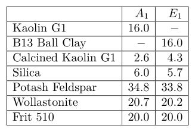
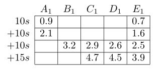
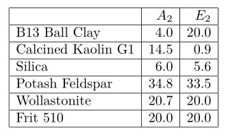
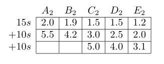

The amount and types of clay in a glaze recipe can have a major effect on how the glaze applies to bisque when dipping. Below are two experiments that demonstate this effect. Feel free to add any other relevant experiments to the article.
The first experiment varies the percentages of two clays, Kaolin G1, and B13 Ball Clay (note that Kaolin G1 isn’t really a kaolin). The left and right glazes contain 16% Kaolin G1 and 16% B13 Ball Clay respectively, were formulated to have the same chemistry, and both had a specific gravity of 1.52 to begin with.

Tiles were dipped for 10 seconds three times, and then for 15 seconds, with 2 days between dips to ensure that they were completely dry. Tiles that showed excessive cracking weren’t dipped the full number of times. Since the tiles were lowered face-down into the glaze, pinholes from the first dip trapped air that resulted in larger craters in subsequent dips.
After each dip, the thickness of the glaze coat was recorded. These measurements are only approximate.

The tests show that replacing Kaolin G1 with B13 Ball Clay leads to a decrease in application thickness, and initially a decreasing in cracking (it might not be clear in the image above, but in the bottom row, the 16% B13 Ball Clay test shows a crack on the top edge, while the other two tests are crack-free)
The second test is a line blend from 4% B13 Ball Clay to 20% B13 Ball Clay, from left to right, in 4% increments.

All glazes were formulated to have the same chemistry, and had an initial specific gravity of 1.57 (This probably increased after each dip, but wasn’t measured). Here the sequence of dipping times was 15s, 10s, 10s, with at least two days between dips.
Glaze coat thickness:

As in the first experiment, increasing B13 Ball Clay leads to decrease in the thickness of the glazes coat, and an initial decrease in the amount of cracking.


{kind=link}
{kind=link}